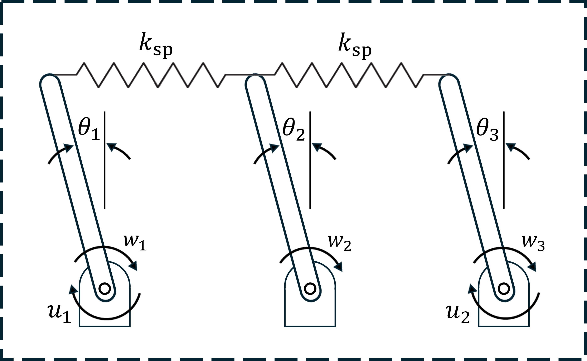
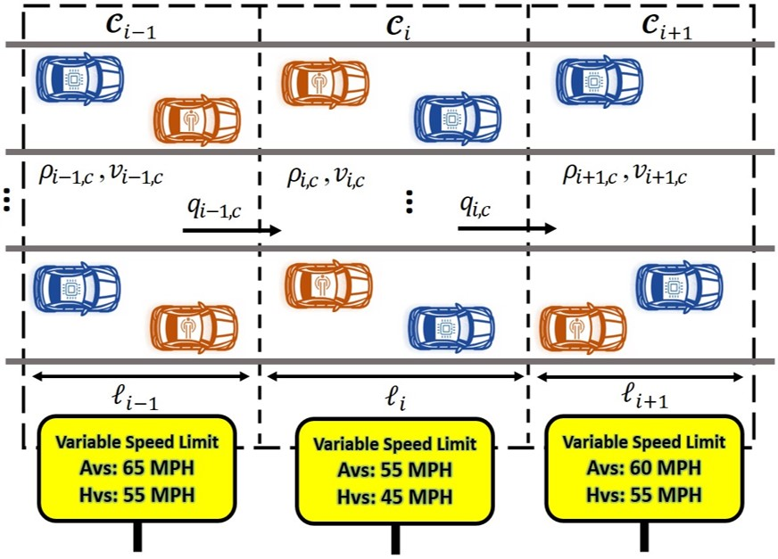
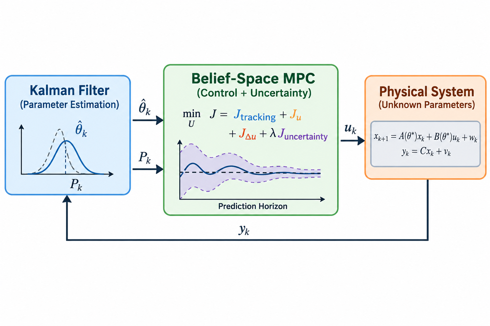

Welcome to my GitHub page! I am a Ph.D. candidate in Mechanical Engineering at UNC Charlotte. My research focuses on control of nonlinear and uncertain systems, with applications in intelligent transportation systems.
Research Interests
- Nonlinear Control
- Data-Driven & Stochastic Control
- Robotics & Autonomous Systems
- Traffic Control
- Intelligent Transportation Systems
- Model Predictive Control
Projects






Publications
Journal Articles
- Arash Rahmanidehkordi, Amir H. Ghasemi, “Traffic density control for heterogeneous highway systems with input constraints, ” IEEE Control Systems Letters, vol. 8, pp. 2787–2792, 2024. DOI: 10.1109/LCSYS.2024.3516073
- Arash Rahmanidehkordi, Amirhossein Ghasemi, “Filtered dynamic inversion for input constrained uncertain linear systems with unknown and unmeasured disturbances,” International Journal of Dynamics and Control, vol. 14, no. 8, p. 286, 2026. DOI: 10.1007/s40435-026-02224-9
- Pouria Karimi Shahri, Arash Rahmanidehkordi, Azad Ghaffari, Amir H. Ghasemi, “Enhancing traffic flow in heterogeneous freeways: Integration of multivariable extremum seeking and filtered feedback linearization control,” IEEE Access, vol. 13, pp. 129 573–129 587, 2025. DOI: 10.1109/ACCESS.2025.3585431
- Pouria Karimi Shahri, Arash Rahmanidehkordi, Azad Ghaffari, Amir H. Ghasemi, “Control of heterogeneous freeways using newton-based extremum seeking and filtered feedback linearization,” ASME Letters in Dynamic Systems and Control, 2026.
- Arash Rahmanidehkordi, Amirhossein Ghasemi, “Input-Constrained Filtered Feedback Linearization for Control-Affine Nonlinear Systems Subject to Unknown Disturbances,” International Journal of Robust and Nonlinear Control, 2026 (under review).
Conference Papers
- Arash Rahmanidehkordi, Amirhossein Ghasemi, “Enhancing traffic flow via feedback linearization and model predictive control under input constraints,” IFAC-PapersOnLine, vol. 58, no. 28, pp. 372–377, 2024. DOI:10.1016/j.ifacol.2025.01.064
- Arash Rahmanidehkordi, Amirhossein Ghasemi, “Traffic density control via filtered feedback linearization in homogeneous highway corridors with input constraints,” 2026 American Control Conference (ACC), 2026, pp. 4125–4131.
Academic Service
Reviewer: IEEE Control Systems Letters (L-CSS), International Journal of Dynamics and Control, Scientific Reports, IEEE Conference on Decision and Control (CDC), American Control Conference (ACC), IEEE Intelligent Transportation Systems Conference (ITSC), Modeling, Estimation and Control Conference (MECC).Contact
Email: arahmani@charlotte.edu